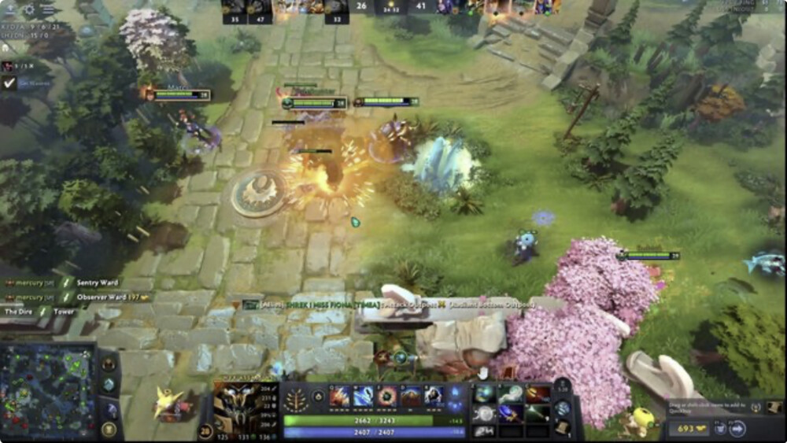
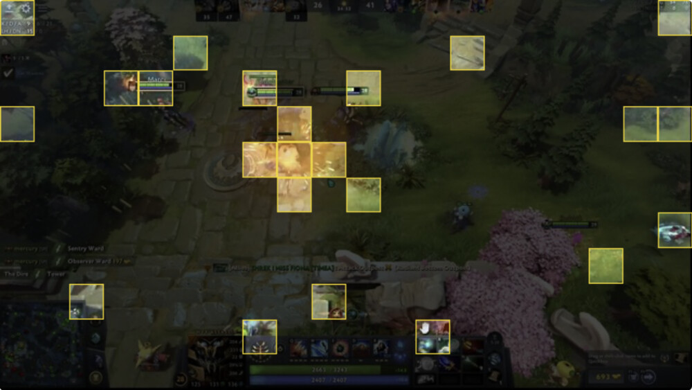

Previous frame
Current frame, dropped regions dimmed
Learning to Keep Tokens That Matter
VLM agents represent every screenshot as thousands of visual tokens. VTR trains a small router jointly with the model to decide which of these tokens enter the language model, and matches the full-resolution model with 2.5 to 5.8× fewer visual tokens.
Every screenshot a VLM agent sees is thousands of visual tokens, and the agent sees a new one after every action. With VTR, the context grows much more slowly.
Visual tokens in the agent's context. We use the average number of visual tokens per image from the paper, 2,040 at full resolution and 808 with VTR on OSWorld, and 220 and 38 per frame in video games.
The vision encoder turns each screenshot into a grid of tokens. For each position in the grid, a small router, about 1% the size of the VLM, reads that position's tokens across the last few screenshots and outputs a keep probability. Only the kept tokens go into the VLM. Every 10th screenshot is kept in full, so the VLM always has a recent full view of the screen.
Screenshots and keep probabilities are from a GIMP task in OSWorld. For clarity, the video shows 4 screenshots on a 16×9 grid, where each cell averages the 60×34 tokens inside it.
We train the router together with the VLM, so that it keeps as few visual tokens as possible without hurting the VLM's actions.


We train the router together with the VLM. The VLM learns to act from the kept tokens, and the router learns which tokens the VLM needs.
Keeping or dropping a token is a discrete choice, so it gives the router no gradient. We scale each kept token by its keep probability, as in mixture-of-experts models, so that the VLM's loss can train the router.
The full and blind models are trained alongside and are used only during training.
To know how much dropping tokens hurts, we compare the VLM's loss with the full model's loss on each action.
Some actions are easy even from every 10th screenshot, so dropping tokens should not matter for them. We therefore weight each action by how much the full model beats the blind model. This way, the actions where the extra screenshots matter count the most.
With a fixed weight between keeping fewer tokens and accuracy, the router either keeps too many tokens or loses too much accuracy, and the right weight is hard to know in advance.
Instead, the router keeps as few tokens as possible, as long as the VLM loses at most 10% of the help it gets from the extra screenshots. The weight becomes a Lagrange multiplier, which we update by dual ascent. It goes up when the VLM loses more than 10%, and goes down when it loses less.
As a result, we never tell the router how many tokens to keep. The chart shows the share of the help lost on validation data during training.
Before joint training, we train the router alone on a simple rule. A region is kept if it changed since the previous screenshot and belongs to an object found by SAM.
Joint training then refines this router. If we keep the initial router frozen and train only the VLM, the score on OSWorld drops from 18.1 to 4.9.
We train one model on desktop tasks and video games, and evaluate it on OSWorld, CUA-World and next-action prediction in 36 games. Dense is the same model at lower image resolutions.
VTR matches the full-resolution model with 2.5× fewer visual tokens on OSWorld, 2.9× on CUA-World and 5.8× in video games.
VTR lowers inference cost by 2.4× on OSWorld, 1.8× on CUA-World and 3.3× in video games, and costs less than the dense model at half the image area.
As more of a game screen moves, H.264 and pixel-diff keep many more tokens, while VTR keeps 2.7% to 5.9%.
@misc{aggarwal2026vtr,
title={Visual Token Routing: Learning to Keep Tokens That Matter},
author={Pranjal Aggarwal and Sean Welleck},
year={2026},
}